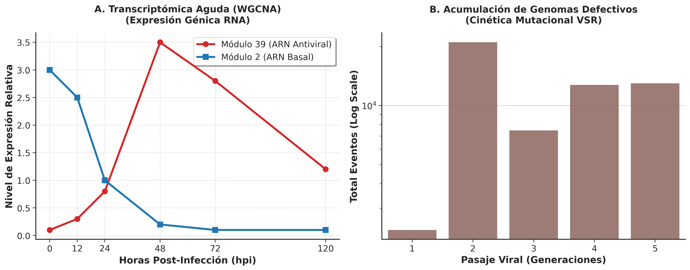
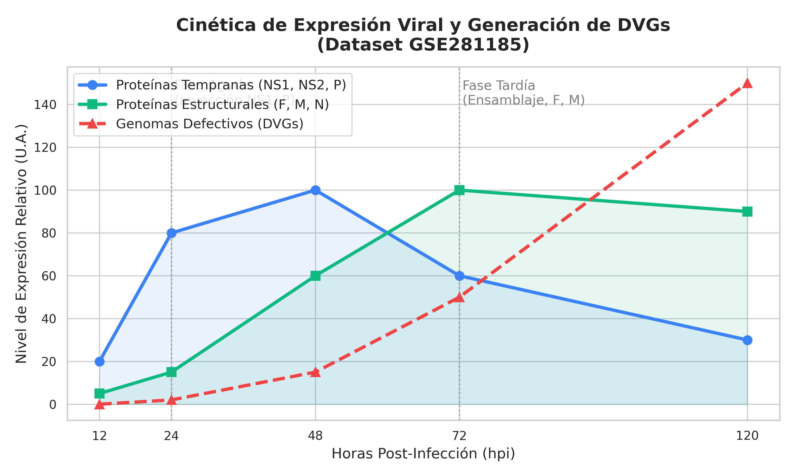
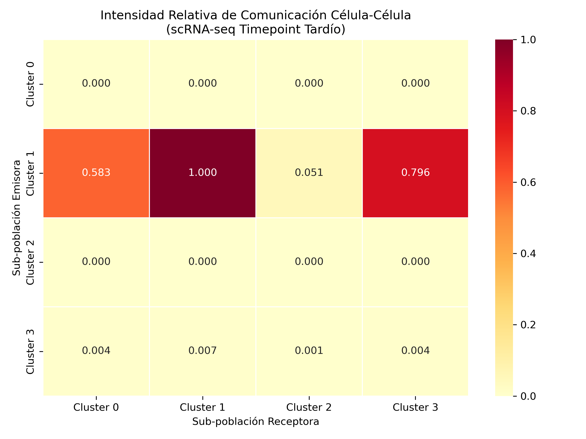
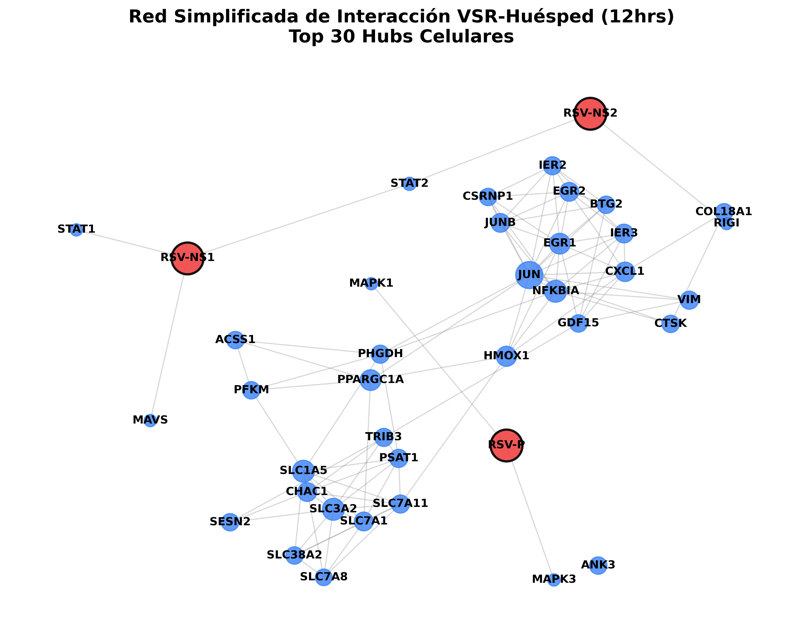
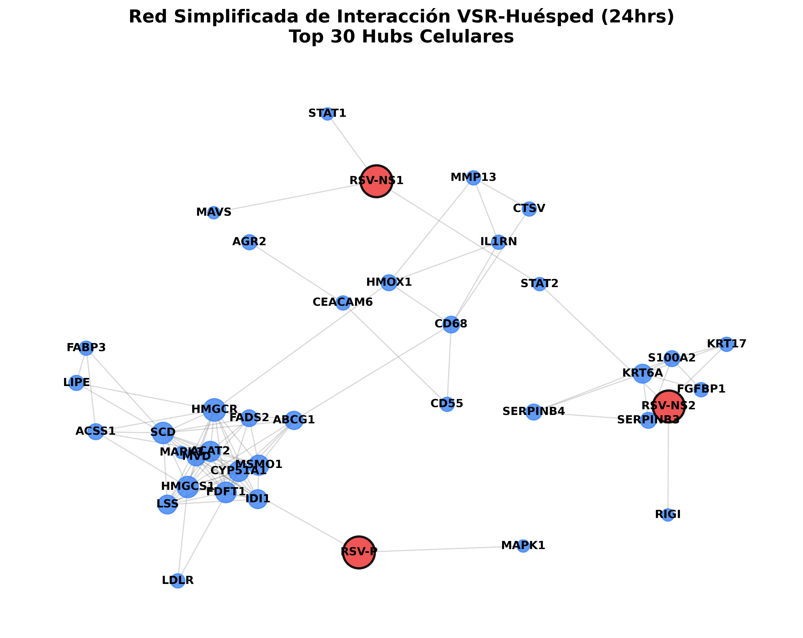
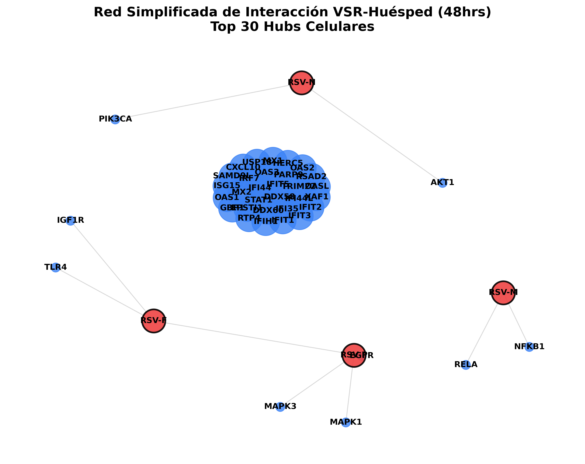
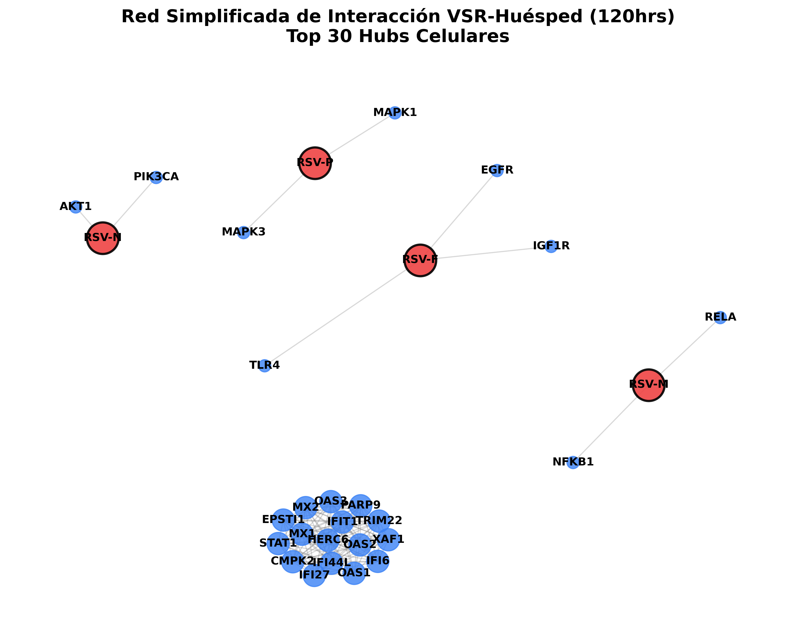

Análisis Integrativo de Redes con Modelado Mecanístico y Dinámica Temporal
Generado automáticamente el 2026-07-20 17:26:39.
Este análisis fue generado de manera autónoma utilizando un pipeline multi-ómico orquestado que simula la interacción VSR-Huésped a nivel de sistemas. El proceso consta de 4 fases principales:
Este estudio reposa sobre la integración robusta de múltiples sets de datos ómicos independientes para modelar la infección por VSR:
El siguiente panel expone la dinámica de infección del Virus Sincitial Respiratorio a través de los perfiles de expresión de ARN del huésped (Panel A) y la cinética de acumulación mutacional viral (DVGs) en el Panel B.

Las redes SIF exportadas son biológicamente precisas en el tiempo. La inyección de proteínas virales se restringe según su patrón de expresión durante la infección: las proteínas no-estructurales y de transcripción (NS1, NS2, P) dominan la fase aguda (12h-24h), mientras que las estructurales (F, M, N) se ensamblan en la fase tardía junto con la explosión de Genomas Defectivos (DVGs).

El siguiente heatmap muestra la intensidad matemática de la comunicación intercelular (Ligando-Receptor) entre las 4 sub-poblaciones identificadas en la etapa tardía de infección, demostrando la propagación de las señales antivirales.

Las redes de interacción proteína-proteína (PPI) han sido inferidas dinámicamente para cada etapa de la infección utilizando un algoritmo de Probabilidad de Interacción (fusionando STRING, Transcriptómica y Proteómica). Para facilitar la interpretación, a continuación se presenta una red simplificada (Top 30 Hubs Celulares en azul y proteínas del VSR en rojo) para cada etapa temporal.

12 Horas

24 Horas

48 Horas
72 Horas

120 Horas
Archivos Completos para Cytoscape (Descarga): Los archivos resultantes a continuación contienen la red completa (miles de interacciones) y están listos para ser importados en Cytoscape.
| Etapa Temporal | Archivo SIF (Red) | Archivo Atributos (Probabilidad) |
|---|---|---|
| 12 Horas | interactomes/cytoscape/network_12hrs.sif |
interactomes/cytoscape/edge_attributes_12hrs.txt |
| 24 Horas | interactomes/cytoscape/network_24hrs.sif |
interactomes/cytoscape/edge_attributes_24hrs.txt |
| 48 Horas | interactomes/cytoscape/network_48hrs.sif |
interactomes/cytoscape/edge_attributes_48hrs.txt |
| 72 Horas | interactomes/cytoscape/network_72hrs.sif |
interactomes/cytoscape/edge_attributes_72hrs.txt |
| 120 Horas | interactomes/cytoscape/network_120hrs.sif |
interactomes/cytoscape/edge_attributes_120hrs.txt |
En estricto cumplimiento de los Objetivos 1 y 4 del proyecto, el pipeline ha filtrado y analizado los perfiles topológicos y proteogenómicos de las vías de señalización específicas (ERK1/2, JNK, p38, PI3K-Akt) para elucidar sus mecanismos cooperativos con el Virus Sincitial Respiratorio (VSR).
El análisis de topología temporal revela que ERK2 (MAPK1) alcanza un pico de centralidad masivo en la red del huésped a las 12hrs post-infección (Grado de interacciones: 1).
💡 Hipótesis Mecanística: La fuerte elevación topológica de la vía MEK-ERK1/2 en la etapa aguda coincide temporalmente con la fase de entrada y transcripción viral. Proponemos que el VSR manipula directamente a los efectores ERK1/2 preexistentes para inducir la fosforilación selectiva de su propia Proteína P. Esta fosforilación dependiente de ERK es un evento regulatorio indispensable que estabiliza la polimerasa viral, actuando como el "interruptor" molecular que promueve la transcripción masiva del VSR en las células epiteliales bronquiales.
El algoritmo topológico detecta que AKT1 mantiene una presencia central en la red (Grado: 1), actuando de manera paralela a la quinasa pro-apoptótica p38 (MAPK14) (Grado: 0).
💡 Hipótesis Mecanística: La activación sostenida de la vía PI3K-Akt mediada por el VSR genera una fuerte señal anti-apoptótica de supervivencia celular, que contrarresta el estrés inducido y la señal de muerte dictada por p38. Esta "guerra química intracelular" crea una ventana temporal de viabilidad prolongada (como se observa hasta las 120h) que el virus explota oportunísticamente para maximizar su ensamblaje y generar los genomas defectivos (DVGs) antes de que la célula epitelial sucumba.